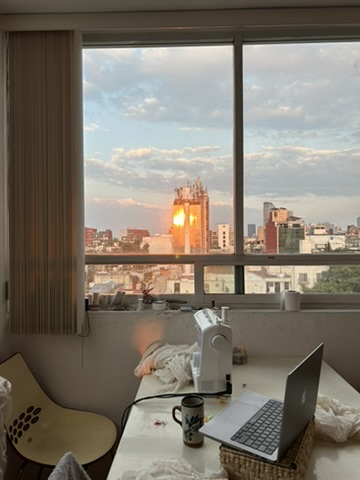
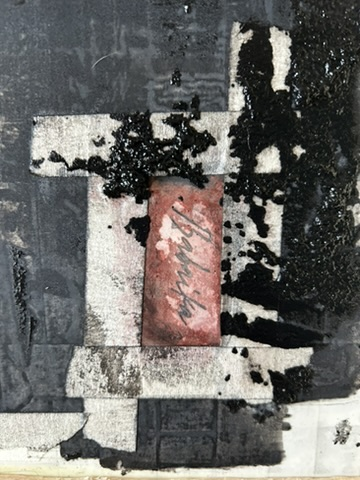

[ PROJECT ABSTRACT ]
The Volga Delta is a terminal hydrological network where a singular river fractures into a thousand shallow capillaries. Babaika is an ongoing spatial practice and mobile archive of this specific topography. Engineered in Mexico City, the project operates through geographical displacement, extracting the environmental memory of Astrakhan and reconstructing it as physical artifacts.
[ NOMENCLATURE ]
The title isolates a localized linguistic collision. In regional Turkic dialects, Babay signified an elder or figure of foreign authority. Entering the Slavic vernacular, the term intersected with the native Baba (matriarch). Modified by a diminutive suffix, the figure underwent a morphological shift, losing anthropomorphic form to become a nocturnal entity - an atmospheric boundary-keeper utilized to regulate spatial behavior in children.
Parallel to this psychological framework is a strict mechanical definition. In 19th-century Caspian and Volga lexicons, a babaika was a massive wooden rudder affixed to heavy rivercraft. It functioned as the primary structural apparatus necessary to resist and navigate high-velocity currents.
[ MATERIAL TRANSLATION ]
The archive operates at the intersection of these two definitions: the formless shadow and the physical tool. It translates specific environmental extremes - zero-visibility atmospheric suspension (fog), hypersaline soil constraints, the aggressive entomology of the June floods (moshka), and the hydrological folklore of water demanding sacrifice - into tangible matter.
Executed through sequential editions, the practice converts topographical data into wearable architecture and domestic micro-monuments. Volume One: The Volga Landscape utilizes heavy silver casting and structural silk to compress aquatic histories into physical coordinates. These artifacts function as mechanical oars - navigating mechanisms engineered to sustain a landscape in permanent transit.
[ PROCESO ]


[ LA EDICIÓN ]
Volume One: The Volga Landscape is produced as a strictly closed edition. Because every artifact requires precise manual execution and specific material sourcing, the archive exists in highly limited physical quantities. Once this edition is exhausted, these specific geographical records will not be reproduced.